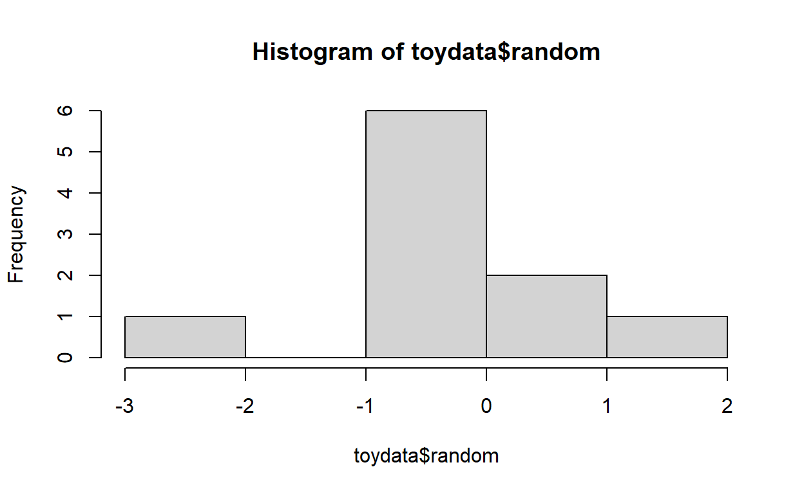
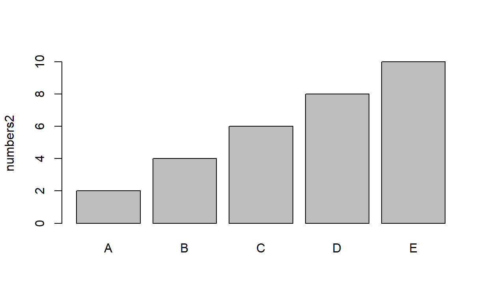
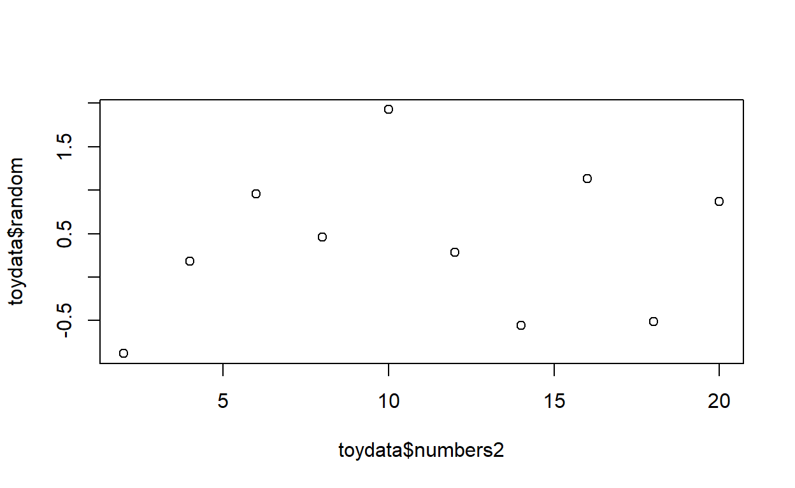
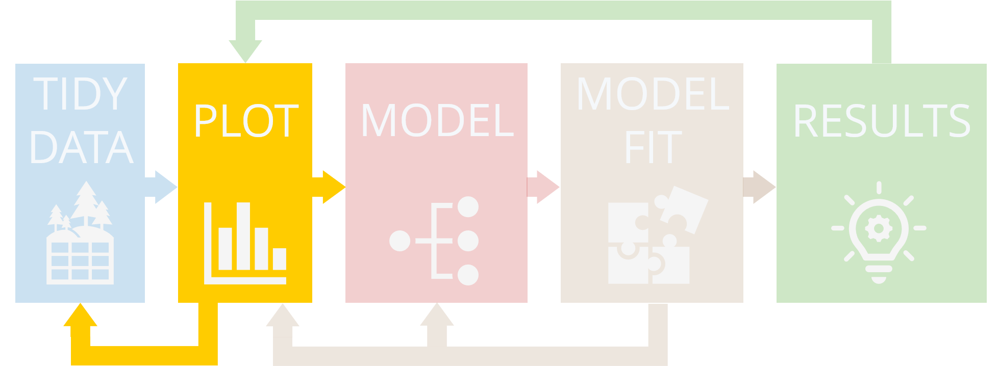
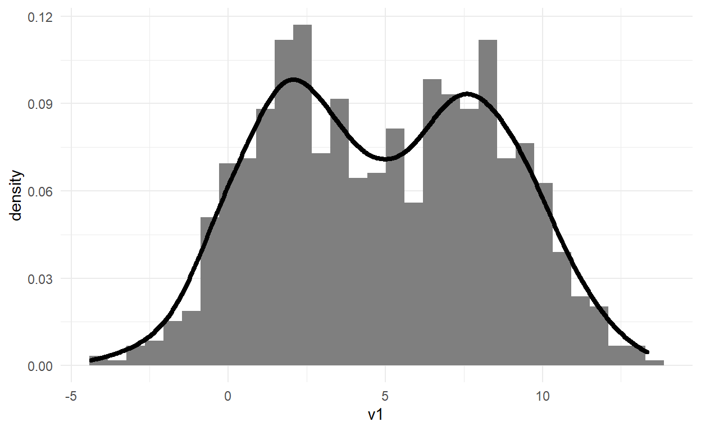
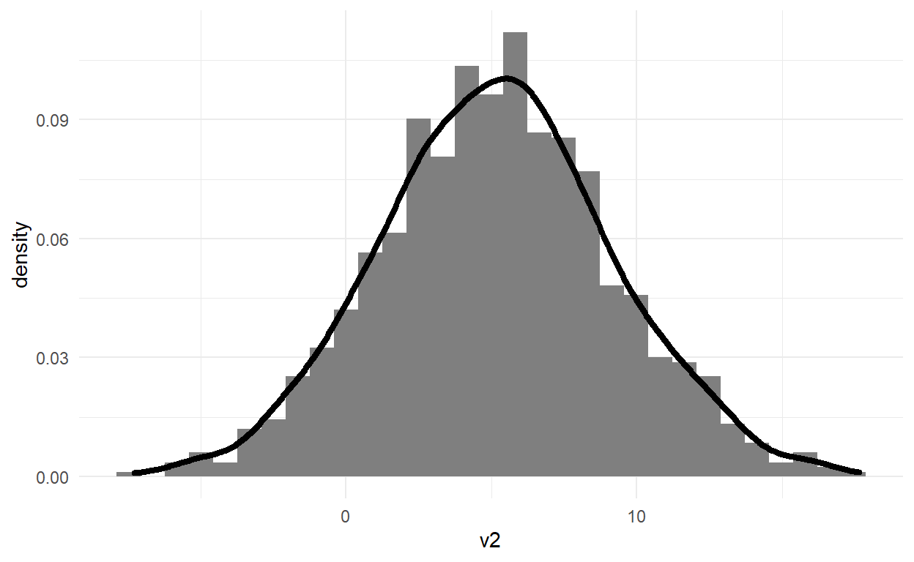
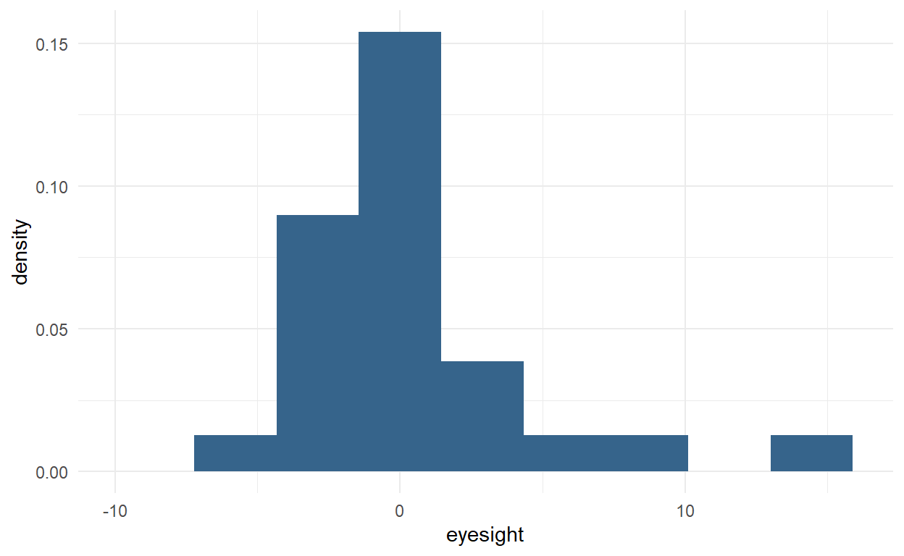
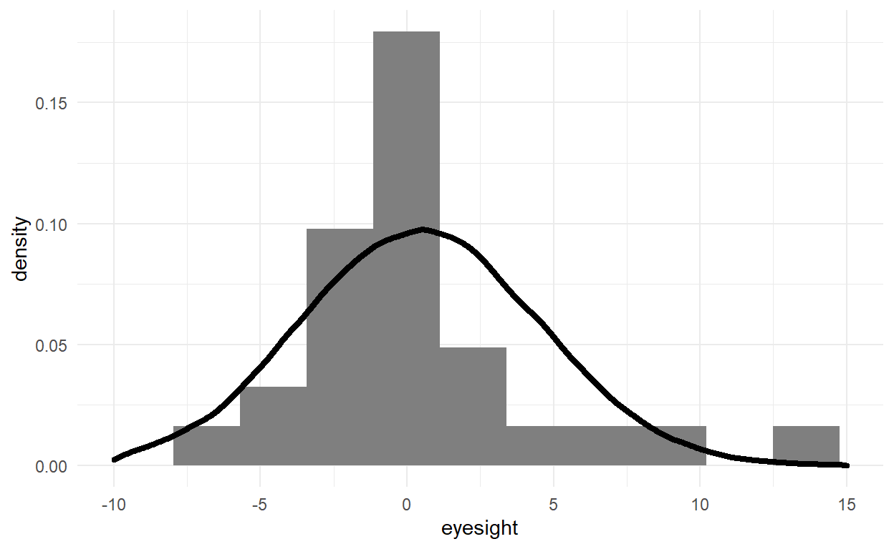
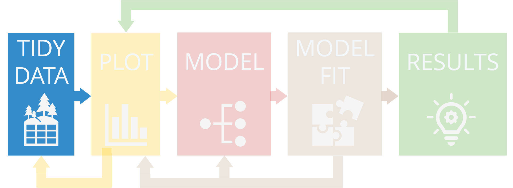
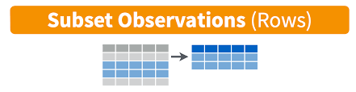

2 — R Basics
Welcome to your first R tutorial! In this tutorial we’ll be covering the very basics of R, which is a programming language originally developed for understanding data and doing statistics.
Most of this Chapter will be completed at home before this week’s online workshop. This first part contains Quizzes and Exercises. These multi- choice questions and R coding exercises will test your learning on this chapter’s topic.
The final section titled < WORKSHOP > will be completed during the online workshop in your tutor groups. This section contains some tasks for you to complete with a real data set, on the topic of this Chapter. You’ll be coding this yourselves in R using RStudio.
This tutorial includes:
- 2.1 Useful resources
- 2.2
R packages
- 2.3 the anatomy (“vocabulary” and “grammar”) of R code
- objects
- functions
- function arguments
- assigning
- comments
- outputs
- 2.4 objects
- assignment to objects
- 2.5 object classes
- 2.5.1
numeric
- 2.5.2
character
- 2.5.3
factor
- 2.5.4
logical
- 2.5.5
data.frame
- reading data frames into
R using read.csv()
- extracting variables from data frames
- simple data frame subsets
- 2.6 Simple plots using “base”
R
- Histograms
- Box plots
- Bar plots
- Scatter plots
- 2.7 Opening your own
R script
- 2.8 Other resources
- 2.9 Final tips useful for coding
- < WORKSHOP >
With this information, we’ll put our newfound knowledge into practice and do some basic coding in R to get used to this new way of working with data. If you’re familiar with R already, this should still serve as a useful reminder!
\(~\)
2.1 RESOURCES
BOOKS
- R for Data Science by Garrett Grolemund and Hadley Wickham, Chapter 4, “Workflow: Basics”.
- Beckerman, Childs & Petchey (2017) Getting started with R, an introduction for Biologists, 2nd ed. pp 1 - 34, Chapter 1, “Getting and getting acquainted with R”.
WEB LINKS:
Let’s get started!
\(~\)
2.2 R PACKAGES
Lots of things can be done with what is called base R, which is a set of R functions and tools that load every time you start R (and therefore every time you start RStudio, as R is run from within RStudio).
Some tasks require add-on R packages with extra functions and tools. Think of these like dictionaries of extra vocabulary and grammar which allow R to communicate with the computer in more elaborate ways.
This video explains briefly how R packages work:

\(~\)
IMPORTANT: TWO SCHOOLS OF THOUGHT
In this module, we’ll be using a collection of packages, built by RStudio, collectively called the tidyverse (although we’ll only be using a few of the ones that are on offer).
The tidyverse is a new, emerging way of working with and visualising data in R. It’s fast becoming a standard way of coding, although some old-schoolers have taken a while to get used to it*. I’ll often refer to it as the ‘new’, ‘modern’ or ‘contemporary’ way of doing things, simply because it was born in the last few years.
An alternative way of working with data and data visualisation is using base R, and many people still do. This has been around since the inception of R. I’ll often refer to it as the ‘old’ or ‘traditional’ way of doing things, simply because it has been around longer.
There is no one ‘correct’ way of doing things. I use a mix of the two for my research, as do many people, and in fact it’s almost impossible to use the tidyverse approach without using some base R.
Many of your lecturers that use R will work only in base R.
We’re using the tidyverse in this module as it generally has a more coherent approach to coding, and because it’s easier to do more powerful things more quickly.
Even I was one of those old-schoolers until just over a year ago!
\(~\)
2.3 THE ANATOMY, VOCABULARY AND GRAMMAR OF R CODE
There are 6 key components to Rcode: objects, assignment, functions, arguments, outputs and comments.

OBJECTS
R is used for Object-Oriented Programming (OOP). This means that when coding in R, you create objects, which are packets of data saved in the computer’s RAM. These objects can be recalled and used throughout that R session, until they are either overwritten or removed.
Think of it like filling a weekend bag full of things: your bag is full of objects ready to use; your R session is also full of objects ready for you to use.
CLASSES
These objects have different classes, which define what the object is and how R works with it. R will work with objects differently, depending on their class: for example, it is possible to calculate the mean of some numbers, but it’s not possible to calculate a mean of some words!
Similarly, you might have two similar-looking objects in your weekend bag, but their “class” would mean you use them in unique ways. Your toothbrush and your hairbrush are both brushes, but you (presumably) use them differently.
FUNCTIONS AND ASSIGNING
Objects are usually created using functions. These create or process data in some way and save it to the RAM (like putting something in the bag). The way this is done is using an assigning arrow <-. The object goes on the left, and the function on the right.
answer <- 6 * 7
The next sections go into greater depth on these topics.
\(~\)
2.4 OBJECTS
This section covers how to create objects, what classes mean, what functions are and how they work.
Objects are created using functions. Simple functions include + - * /, only one of which is not an Ed Sheeran album.
< EXERCISE 1 > Objects
Use the functions + - * / to:
- Choose any number
- Add the next highest integer number
- Add 9
- Divide by 2
- Subtract your original number
Hint: don’t forget the order of operations: * and / are executed before + and -! Parentheses ( ) can help group the right operations.
# If your number is 42
((42 + 43 + 9) / 2) - 42
# Whatever number you chose, your answer is 5.
More complicated functions take the form function(argument1, argument2, ...). Each function has its own specific set of arguments, and a different object is created depending on what these arguments are.
numbers <- seq(1, 10, 1)
numbers
## [1] 1 2 3 4 5 6 7 8 9 10
The function seq() means “sequence”. This sequence is the integer numbers starting at 1 and ending at 10.
We can do certain things with this vector. For example, we might want to see a summary about it, find out what its length is, calculate the mean or see the first 5 elements:
summary(numbers)
## Min. 1st Qu. Median Mean 3rd Qu. Max.
## 1.00 3.25 5.50 5.50 7.75 10.00
length(numbers)
## [1] 10
mean(numbers)
## [1] 5.5
numbers[1:5]
## [1] 1 2 3 4 5
In this case 1:5 does the same thing as seq(1, 5, 1). There are often many ways to get any single output in R, in the same way that there are often many different ways to say one thing in a spoken language.
We can change or add arguments to make a function behave differently. For example, adding an argument digits to the summary() function gives the results to a certain number of decimal places.
summary(numbers, digits = 1)
## Min. 1st Qu. Median Mean 3rd Qu. Max.
## 1 3 6 6 8 10
Going back to the original creation of the numbers object, we can change the arguments of seq to create a different object: the two-times-table up to 20.
numbers2 <- seq(2, 20, 2)
numbers2
## [1] 2 4 6 8 10 12 14 16 18 20
< EXERCISE 2 > Objects
Create an object called numbers3 which is a sequence of numbers from 3 to 21, in steps of 2.
As we have numbers2 and numbers3, maybe we should be consistent and change the name of numbers to numbers1. We can do that by creating a new object and removing the old one:
numbers1 <- numbers
rm(numbers)
We created numbers1 from another object numbers. In fact, you can create object using multiple other objects, and objects can be created in different ways.
# We could create numbers2 by multiplying numbers1 by 2
numbers1 * 2
## [1] 2 4 6 8 10 12 14 16 18 20
# We could add 1 to every number in numbers2
numbers2 + 1
## [1] 3 5 7 9 11 13 15 17 19 21
# We could add together numbers1 and numbers2
numbers1 + numbers2
## [1] 3 6 9 12 15 18 21 24 27 30
Note how R processes objects: both numbers1 and numbers2 have 10 individual numbers (termed elements of the vector), so R adds the two first elements, the two second elements, the two third elements, etc. If we provide R with fewer than 10 elements, then it recycles the shorter vector: so if we add 1 to numbers1 then it adds 1 to every element.
< QUIZ 1 > (Objects)
\(~\)
2.5 OBJECT CLASSES
Objects always have a class which defines how R processes and interacts with them. There are 5 different class types that it’s important to know at this point.
- numeric
- character
- factor
- logical
- data.frame
\(~\)
2.5.1 numeric
The objects numbers1, numbers2 and numbers3 have the class numeric: this means a set (called a vector) of numbers. You can see that the class of numbers1 is numeric using the function class():
class(numbers1)
## [1] "numeric"
We have already seen a fair bit of how numeric vectors are processed by R.
2.5.2 character
We’ll create a new object which looks kinda like numbers1, but is not actually the same.
characters1 <- c("1", "2", "3", "4", "5", "6", "7", "8", "9", "10")
characters1
## [1] "1" "2" "3" "4" "5" "6" "7" "8" "9" "10"
The c() function is really important. It means “concatenate”, and basically glues together the arguments you give it. The characters1 object looks similar to the numbers1 object, but it’s not. Note the quote marks around each vector element.
< EXERCISE 3 > Classes - character
Find out the class of characters1.
characters1 <- c("1", "2", "3", "4", "5", "6", "7", "8", "9", "10")
# the answer is 'character'.
class(characters1)
Let’s try and find the same information about characters1 as we did for numbers1.
summary(characters1)
## Length Class Mode
## 10 character character
length(characters1)
## [1] 10
mean(characters1)
## [1] NA
characters1[1:5]
## [1] "1" "2" "3" "4" "5"
One of these functions went kinda wrong. As far as R is concerned, the elements of characters1 are words, and it can’t calculate the mean of some words. It returns NA, meaning “Not Applicable”: R language for something which doesn’t exist or is missing.
The Warning message makes sure you’re aware that the code did run and give an output, but something probably went wrong.
R can also return an Error message, which tells you that the function has failed to run at all, and gave no output.
Pay attention to these messages: usually if you get an Error or a Warning, much of your subsequent code will fail as it depends on things being calculated properly.
It’s possible to convert things between different classes, although the behaviour is sometimes unpredictable so be careful!
characters2 <- as.character(numbers2)
characters2
## [1] "2" "4" "6" "8" "10" "12" "14" "16" "18" "20"
2.5.3 factor
A factor object is like a character object, but recognises groups of elements which are the same, called levels. Let’s take a look:
factor1 <- rep(LETTERS[1:5], 2)
factor1 <- as.factor(factor1)
factor1
## [1] A B C D E A B C D E
## Levels: A B C D E
The object LETTERS is a character object which already exists in R without us having to create it. Note that it has to be LETTERS in capitals: R is case-sensitive, which means the code won’t work if you have a lower-case letter rather than an upper-case letter or vice versa. This is a really common mistake to make and easy to miss!
We use the square brackets to choose which letters we want: we choose A, B, C, D and E, which are the first 5 letters of the alphabet.
The rep function means repeat, so we repeat A to E two times, to give a vector that has a length of 10.
Finally, we convert that character vector to a factor using as.factor() and overwrite the original factor1 object by reassigning it.
summary(factor1)
## A B C D E
## 2 2 2 2 2
We can see from the summary that R recognises the five different factor levels, A through E.
< QUIZ 3 > (Classes - factor)
\(~\)
2.5.4 logical
Logical objects are perhaps hard to understand at first, but they’re simple really. They basically indicate whether something is TRUE or FALSE. They usually relate to a question we ask of our data.
rand_norm <- rnorm(50, 0, 1)
rand_norm
## [1] -1.85358544 -1.04886579 -0.70292446 1.12558739 -0.82551201 -0.59776939
## [7] -0.34031620 -0.04362427 1.11337285 -1.13757422 -0.85575089 0.06867122
## [13] 1.33971382 0.77042965 -1.11116584 -0.03962623 -0.49055760 -0.02591541
## [19] 0.16609510 0.64561874 -0.15581665 -0.14757506 -1.01799399 1.21564464
## [25] -1.05557765 0.19660289 -0.56315396 0.87696155 0.05610602 0.28322549
## [31] -0.49008752 1.61318720 -0.96739043 1.20350949 -1.48781650 -2.32063804
## [37] 0.10614676 -0.58841221 -1.74368122 -0.02732723 0.04921659 1.60270794
## [43] -1.90626062 -0.58433814 0.56301434 0.35729445 0.37413123 -0.17962449
## [49] 0.30067284 0.57487971
over0 <- rand_norm > 0
over0
## [1] FALSE FALSE FALSE TRUE FALSE FALSE FALSE FALSE TRUE FALSE FALSE TRUE
## [13] TRUE TRUE FALSE FALSE FALSE FALSE TRUE TRUE FALSE FALSE FALSE TRUE
## [25] FALSE TRUE FALSE TRUE TRUE TRUE FALSE TRUE FALSE TRUE FALSE FALSE
## [37] TRUE FALSE FALSE FALSE TRUE TRUE FALSE FALSE TRUE TRUE TRUE FALSE
## [49] TRUE TRUE
The result is information on which of your random data are greater than than 0.
< QUIZ 4 > (Classes - logical)
There are lots of questions you can ask of your data using logical operators, and you will encounter many on your R journey e.g.
> greater than>= greater than or equal to< less than<= less than or equal to
These behave in exactly the way you would expect given how you’ve already seen > works.
Logical operators (and R in general) don’t always behave in the way you might expect, however. Take these logical operators:
== exactly equal to!= not equal to
== tells you whether the two objects on the left and the right are exactly equal to each other:
1 == 1
## [1] TRUE
c(1, 1, 2, 3) == 1
## [1] TRUE TRUE FALSE FALSE
# using some objects we created earlier in the chapter:
numbers2 == numbers1 * 2
## [1] TRUE TRUE TRUE TRUE TRUE TRUE TRUE TRUE TRUE TRUE
numbers1 == characters1
## [1] TRUE TRUE TRUE TRUE TRUE TRUE TRUE TRUE TRUE TRUE
We might not expect numbers1 == characters1 to return all TRUE. All I can say is… sometimes R is weird.
!= does the opposite job of ==, telling us which elements on the right are NOT the same as the element(s) on the left.
1 != 1
## [1] FALSE
"ABC" != "ABCDEFG"
## [1] TRUE
One final useful logical operator:
%in% tells you which elements of one vector belong to another vector.
%in% is used to find out whether a value or values in one vector (on the left) exist in another vector (on the right). For example:
c(1, 2, 3) %in% c(1, 2)
## [1] TRUE TRUE FALSE
numbers2 %in% numbers1
## [1] TRUE TRUE TRUE TRUE TRUE FALSE FALSE FALSE FALSE FALSE
It’s not necessary when using %in% for the two vectors to have the same length; in the first line of code, we compare a vector with three elements to a vector with two elements.
We interpret the results like this: if numbers2 %in% numbers1 is TRUE then the corresponding element of numbers2 is found somewhere in numbers1. If FALSE, it isn’t. We can see that the first 5 elements of numbers2 are found in numbers1.
Logicals are very useful for subsetting data:
num2_in_num1 <- numbers2 %in% numbers1
numbers2[num2_in_num1]
## [1] 2 4 6 8 10
We first create an object that tells us which elements of numbers2 are in numbers1. Then, when num2_in_num1 is put in the square brackets, it picks out all the elements of numbers2 which are TRUE: these are the values of numbers in numbers2 which are also found somewhere in numbers1.
< EXERCISE 4 > Classes - logical
Put in the correct logical operators. The correct outputs are found in the solutions.
# 1. ((42 + 43 + 9) / 2) - 42 is the same as ((31 + 32 + 9) / 2) - 31
((42 + 43 + 9) / 2) - 42 ((31 + 32 + 9) / 2) - 31
# the mean of one set of random numbers is NOT the same as the mean of another
mean(runif(100)) mean(runif(100))
# cake is greater than biscuits
"cake" "biscuits"
# c("A", "B", "Z") are found in the last 10 letters of the alphabet
c("A", "B", "Z") LETTERS[16:26]
1. TRUE, using ==
2. TRUE, using !=
3. FALSE, using >
This is another strange behaviour of R that I don't understand. I
don't understand how or why one character object "cake" can be numerically greater than another
"biscuits", but R has some way of deciding. It works with any character object.
4. FALSE FALSE TRUE, using %in%
\(~\)
2.5.5 data.frame
data.frames are extremely important objects. This is the way most data is stored for data analysis. As we learned earlier, there’s one column per variable and one row per observation. data.frames are simply collections of variables:
factor2 <- rep(LETTERS[1:2], 5)
random <- rnorm(10, 0, 1)
toydata <- data.frame(numbers2, factor1, factor2, random)
toydata
To access variables in a data.frame, you simply use the $ dollar sign.
toydata$numbers2
## [1] 2 4 6 8 10 12 14 16 18 20
Vectors are one-dimensional but data frames are two-dimensional: rows and columns. The function dim() shows you how many dimensions:
- First, rows
- Second, columns
We know this to be 10 replicates (rows) and 4 variables (columns):
dim(toydata)
## [1] 10 4
To quickly select a few rows and/or columns, we can use the square brackets like for vectors, but we need to provide two numbers.
- First: the rows we want to select
- Second: the columns we want to select.
- Separated by a comma
- If you want to select all rows or columns, leave a blank space before or after the comma.
Like this: dataframe[rows, columns].
# If you want all columns then leave the second number blank.
# The first 5 rows of the data frame:
toydata[1:5, ]
# If you want all rows then leave the first number blank.
# The first and third columns of the data frame:
toydata[ , c(1, 3)]
# The first rows of columns 1 and 3:
toydata[1:5, c(1, 3)]
Having commas in the right places is important in R. If you don’t have a comma to indicate both rows and columns, then you will encounter an error about “undefined rows” or “undefined columns”. A missing or extra comma is a really common mistake and easy to miss.
Most of the time we will be using a different, more modern way of managing and selecting data from data frames (introduced in Chapter 4). It’s a little more flexible and elegant. Using the square brackets [ ] is really great for doing very simple and quick data subsets, but they can get unwieldy when it comes to more complicated data subsets involving logicals.
You can read in data.frames from your own data using the function read.csv(). Your data frame needs to be saved as a CSV file, in a data frame layout. You can do this easily in Excel using File -> Save As -> CSV (Comma delimited).
Then you provide the path to the file. For example, on windows, if the file “data.csv” is stored in your “My Documents” folder, you use
read.csv("C:/Users/UserName/Documents/data.csv")
# (replace "UserName" with your user name)
On Mac, if the file was stored in your Documents folder then you may use
### *** CHECK
read.csv("~/Documents/data.csv")
There are a few requirements / good practices when preparing data in excel or other spreadsheet programs to save as a csv file.
- One column per variable, one row per “replicate” (an individual piece of data associated with that variable).
- No empty columns or rows.
- No empty cells. If there is a missing piece of data, put
NA in the cell. R understands this to be missing data.
- Ideally, no spaces. Replace spaces in variable names and character or factor vectors with an underscore
_.
- Character variables should have quote marks
" " or ' ' around each data point, otherwise R will interpret them as factors.
\(~\)
2.6 SIMPLE PLOTS
R is an extremely powerful graphics generator. In recent years, this has extended to generation of things like interactive and multi-dimensional figures. Check out for example this app that catalogues all LEGO pieces in all sets of the LEGO world, or this one that allows you to explore recent crimes anywhere in the UK. More apps, including many with biological data, are available in this gallery. All of these are powered by R.
BUT, it all starts with a simple plot. It’s very easy to produce a plot in R, and we’ll run through some here. These are what we term simple **base R* graphics.
Histograms can be produced using the hist() function.
hist(toydata$random)

Box plots can be produced using the boxplot() function.
boxplot(toydata$numbers2)

Bar graphs can be produced using the barplot() function.
barplot(toydata$numbers2[1:5], names.arg = toydata$factor1[1:5],
ylab = "numbers2")

We introduced a couple of extre arguments here: names.arg labels the x axis and ylab labels the y axis.
Scatter plots can be produced using the plot() function, with both an x variable (first argument) and a y variable (second argument).
plot(toydata$numbers2, toydata$random)

< EXERCISE 5 > Simple Plots
Create a boxplot of random and a histogram of numbers2.
Copy the code from the example boxplot and histogram, and replace the variable names.
\(~\)
2.7 CREATING AN R SCRIPT
R code is saved in a file with the extension .R. In the same way as Micosoft Word knows to open files with .docx extensions and Adobe Reader knows to open files with .pdf extensions, RStudio knows to open files with .R extensions, and to work with them in certain ways.
When you open RStudio for the first time, there is an empty (“Untitled”) .R file already there for you. Simply save this file wherever you like (and further .R files can be generated by using File –> New File –> R Script).
This is the file in which you’re going to write code to fulfil the tasks in Section 2 of each Chapter. In each Chapter you will cover one aspect of the analytical process. You’ll apply the knowledge and skills learned during the Chapter to a biological data set and add to this code file during each online workshop, so that by the end of the book, you’ll have completed a full analysis including Tidying and Visualising your data, fitting a model and evaluating how well it fits the data, tweaking the data, visualisations and the model if necessary, until you have some reliable and reproducible results.
If you wish, you can copy code from these worksheets into a second R file and practise coding in RStudio alongside completing these worksheets at home.
\(~\)
2.8 OTHER RESOURCES
There’s a huge amount of other resources out there in the web to help you learn basic R programming. For exmple, check out this tutorial from RStudio on Programming Basics.
\(~\)
2.9 FINAL TIPS
Use ? to get help on a function. These help pages take a fair while to get used to, but they lay out what arguments a function takes, what those arguments are, what the output (value) of the function is, and some examples.
We use the # (hash) symbol to create a comment: nothing after the # will be run as code. It’s good practise to comment your code as you go, so when you go back to it later, it makes sense to you. Trust me, you make life so much easier for your future self if you comment well!
The internet is really useful. As you get used to R, you’ll be able to find blogs and articles and forums that give you answers. There are also R mailing lists, but it’s best not to email them until you’re sure you’ve done everything you can to solve your problem.
If something goes wrong with your R coding (usually Errors), then 99.9% of the time it’s because you’ve made a mistake. R is very literal. Be careful!
< EXERCISE 6 > Final Tips
Correct the mistakes (‘bugs’) in the lines of code below, bearing in mind the common, small mistakes mentioned in this Chapter. Keep going until you get the right outputs!
# a sequence from 4 to 40 in steps of 4
mynums <- seq(4, 40, 4,)
mynums
# the first 5 and last 5 letters of the alphabet
mychars <- LETTERS[c(1:5, 21:26)]
# length of mychars
length(Mychars)
# turn mychars into a factor
myfacs <- asfactor(mychars)
# create data frame
mydata <- data.frame(mynums, mychars, myfacs)
# see numbers
mydata$mynum
# first 5 rows of data frame
mydata[1:5]
# first 2 columns of data frame
mydata[1:2, ]
These are really common mistakes to make. Be aware!
\(~\)
< WORKSHOP > R Basics
During this week’s workshop, we’re going to build a data frame of made-up data, similar to what was done in the first Chapter of the workbook. This will involve:
- creating random numeric vectors
- creating factor vectors
- creating character vectors
- building a data frame from existing vectors in R
- selecting parts of a data frame using
base R methods
We will cover quick, basic plots in base R, including:
- histograms
- boxplots
- barplots
- scatter plots
Finally, we will read in the data that we’ll be using for the rest of these online sessions, which are saved as csv files. If you’re not sure which one you’re supposed to be using, check the DATA page of this workbook.
You won’t have encountered absolutely everything you need to do during the at-home study. To mention it again, a really important part of data skills and coding is being able to find answers to question and solutions to probelms yourselves, using whatever resources you have to hand, but especially the internet.
R BASICS: EXERCISES & QUESTIONS
20-25 mins:
- First create a character object called
names which is the first name of the people in your tutor group (including anyone who is missing). If there are two people in your group with the same name, then give each a number (i.e. Jane1, Jane2,… )
- What is the length of this character vector?
- Now create a numeric variable called
norm which is a random normal distribution with the same length as the number of people in your tutor group. It should have a mean value of 7 and a variance of 1.
- Can this normal distribution have values below zero?
- Can the arguments of this vector be written in any order or does it have to be in the order you used? *The normal distribution is just one kind of distribution that you can draw random numbers from. Another distribution you are probably familiar with is the uniform distribution, where every number has an equal chance of being chosen. Search online to see whether you can find a function that will draw random numbers from a uniform distribution.
- What is the name of the function?
- How would you create an object called
unif which consists of 10 random numbers drawn from a uniform distribution between 0 and 1?
- If you had this object
unif and you wanted to change those proportions to percentages, how would you do it?
- Now create a factor vector called
sibs which tells you whether each person in your tutor group has siblings. It should take the value sis if the person has sister(s), bro if the person has brother(s),both if they have both, and neither if they have neither. If the person is absent, use NA.
- Hint: you may want to create a character vector first, and convert it into a factor.
- Create a data frame for your tutor group of the 4 objects (
name, norm, and sibs). Call it what you like :)
- What is the name of this object?
BIOLOGICAL DATA
20-25 mins:
For the rest of the online workshops, we’ll be using real biological data sets. These data sets are tailored slightly to your degree programs: check the DATA page for a summary of the data set and to find out which one you’re using.
- Read the CSV in to R. Save the object as:
DNA_data for the DNA and ageing data set from Huh et al. (2016) Maintenance of age in human neurons generated by microRNA-based neuronal conversion of fibroblasts. eLife, 5:e18648. DOI: 10.7554/eLife.18648.dogs_data for the urban dogs data set from Majumder et al. (2016) Denning habits of free-ranging dogs reveal preference for human proximity. Scientific Reports, 6:32014. DOI: 10.1038/srep32014.pantheria_data for the mammal life history data set from Jones et al. (2009) PanTHERIA: a species-level database of life history, ecology, and geography of extant and recently extinct mammals. Ecology, 90, 2648. DOI: 10.1890/08-1494.1.
I want to encourage you to explore the data now. Usually these sections will be quite prescriptive, with specific tasks. Right now is just a good opportunity to get to know the data, which is so important. You’re free to explore as you wish, using the things you’ve learned in this Chapter, but here are some ideas of things you might want to do:
- How many variables, and how many replicates (i.e. the dimensions of the data frame)
- How many
numeric, character, factor, logical or other different types of variable are there?
- Is there any missing data?
- What does a summary of the data frame tell you?
- Make a histogram of one of the numeric variables
- Make a boxplot of one of the factors (x axis) against one of the numeric variables (y axis)
- Make a scatterplot of two numeric variables against one another
\(~\)
END OF CHAPTER
3 — Data Distributions
Most of this Chapter will be completed at home before this week’s online workshop. This first part contains Quizzes and Exercises. These multi- choice questions and R coding exercises will test your learning on this chapter’s topic.
The final section titled < WORKSHOP > will be completed during the online workshop in your tutor groups. This section contains some tasks for you to complete with a real data set, on the topic of this Chapter. You’ll be coding this yourselves in R using RStudio.
In this session we’ll be covering…
- 3.1 Resources
- 3.2 R packages needed for visualising data distributions
- 3.3 What are data distributions
- 3.4 Summary Statistics
- 3.5 Visualising data distributions
- 3.5.1 Normal (Gaussian) distribution
- 3.5.2 Proportions (beta distribution)
- 3.5.3 & 3.5.4 Counts (Poisson distribution)
- 3.6 Other resources
- < WORKSHOP >
The Chapter mostly deals with the first PLOTTING part of the analytical process:

Continue to Resources…
\(~\)
3.1 RESOURCES
BOOKS
- R for Data Science by Garrett Grolemund and Hadley Wickham, Chapter 3, “Data visualisation”.
- Getting Started with R: An Introduction for Biologists (2nd ed) by Andrew Beckerman, Dylan Childs, and Owen Petchey, pp 87 - 91, Chapter 4.4, “Distributions: making histograms of numeric variables”, & Chapter 4.5, “Saving your graphs for presenatation, documentation, etc.”.
CHEATSHEETS
- ggplot2 cheatsheet - see Resources section on blackboard or download here
ShinyGLM
We’ll be using the ShinyGLM webapp in this and subsequent chapters. It’s designed to make learning data skills in R an interactive experience. It’s worth getting to know how to use it, so make sure to read the USER GUIDE now.
In this Chapter, we’ll mainly be working with the DATA DISTRIBUTIONS tab.
\(~\)
3.2 R PACKAGES
We encountered R packages in the last 2 Chapters. In this Chapter we will need to use an R package developed by the RStudio team.
ggplot2, is an R package which makes pretty pretty data visualisations.
If you are working in RStudio, the package first needs to be installed onto your computer. Until you update R for the first time, this only needs to be done once.
install.packages("ggplot2")
Once a package is installed, it is available for R to use. But unless you tell R to actually use the package then it won’t know it needs to. The reason for thisvis that once you’re using R a lot and have loads of packages installed, if you loaded all the packages in every time you start R it would take forever.
Think of it like apps on your phone: imagine if every single app on your phone opened every time you switched the phone on on…! Nightmare.
The way we load up these packages is using library(). You usually need to do this every time you start a new R session (i.e. every time you open RStudio).
library(ggplot2)
< QUIZ 1 > R Packages
R aficionados will tell you not to confuse “package” and “library”
- packages are stored in a library
- you use the function
library() to load a package from your library.
If you tell R geeks like me that you’re loading a library, we can’t handle it and our brains explode.
\(~\)
3.3 DATA DISTRIBUTIONS
It’s really important to understand the nature of your data. There are different types of data, and here are some of the types we regularly encounter as biologists:
- numeric (quantitative)
- continuous: Gaussian, beta, exponential
- discrete (counts): Poisson, binomial
- non-numeric (qualitative)
Let’s remind ourselves of the different distributions found in the games data, and how they map onto these data qualities.
< QUIZ 2 > Data Distributions
3.3.1 Data Distributions Explained
The distributions of variables are important factors in how we interpret plots and analyses. Distributions are effectively ‘counts’ of the number of times certain numeric variable values occur. For discrete numeric variables, such as the number of countries or continents, the distribution may be simply the counts of occurrence of 0, 1, 2, 3, 4, etc. For both discrete and continuous numeric variables, the distribution represents the number of times variable values occur within certain intervals (e.g. for the eyesight variable we can count the number of values between -3 to -2, -2 to -1, -1 to 0,…, or any other intervals we choose).
We use these counts to visualise distributions, as we will see shortly.
Distributions also show us how variables are:
- bounded (i.e. cannot occur above, below or between certain values)
- how they are skewed (e.g. there are lots of small values but not many large ones or vice versa)
- what values their moments (i.e. mean, variance, skewness) may take
- which statistical distributions the data approximate.
Distributions of your data are important, as all of the things listed here can have implications for:
- how you analyse your data
- whether your statistical models are valid
- how you interpret your statistical model results.
3.4 SUMMARY STATISTICS
You’ve doubtless come across these before. There are a couple of types of summary statistic:
- parametric statistics describe the data by processing their actual values. E.g.
- the mean
- the standard deviation
- nonparametric statistics describe the data in terms of their ranked values. E.g.
- the median
- the quartiles and other quantiles
- some statistics can be calculated using both methods
< EXERCISE 1 > Summary Statistics
To get an understanding of what this means, consider the following sets of numbers and calculate the mean, standard deviation, median and quartiles of each.
nums1 <- c(2, 3, 4, 4, 4, 5, 6, 7, 9, 12)
nums2 <- c(2, 3, 4, 4, 4, 5, 10, 1534, 7532010)
The summary() function will give you many, but not all, of the values!
DON’T BELIEVE NONPARAMETRIC STATISTICS!
You should see once you’ve calculated the statistics in the above exercise that the mean and standard deviation really reflect the large differences in values between the two sets of numbers, as they are calculated using the values themselves, whilst the median and quartiles do not reflect these differences as they’re based simply on ranking whether one data point is bigger than another.
Be wary and bear these differences in mind whenever you’re using summary stats. For example, remember: a boxplot only shows you quartiles, not the full parametric data spread!
DON’T BELIEVE PARAMETRIC STATISTICS EITHER! What if I told you that you have two variables with:
- symmetrical distributions
- roughly the same mean
- roughly the same median
- roughly the same interquartile range
- roughly the same standard deviation
Here are two distributions and their summary statistics.
Variable 1:  Summary stats and standard deviation:
## Min. 1st Qu. Median Mean 3rd Qu. Max.
## -4.297 1.889 5.004 4.932 7.973 13.355
## [1] 3.601068
Variable 2:  Summary stats and standard deviation:
## Min. 1st Qu. Median Mean 3rd Qu. Max.
## -10.135 2.469 4.820 4.924 7.611 18.663
## [1] 3.883776
Definitely not the same, despite sharing the same summary statisics.
I hope there’s no more need for an explanation than that, as to why you should plot your data distributions before you embark on any kind of analysis!
\(~\)
3.5 VISUALISING DATA DISTRIBUTIONS
Data distributions are most commonly visualised using a histogram.
You’ve undoubtedly come across histograms, but a refresher: the variable of interest, on the x axis, is split into bins. Each bin has a bar representing either the count of the number of data points that fall in that bin, or the density: the proportion of total data points that fall in that bin.
\(~\)
3.5.1 EYESIGHT: NORMAL DATA (NORMAL OR ‘GAUSSIAN’ DISTRIBUTION)
We’re going to begin by working with the eyesight variable. This approximates a normal distribution, which is the most common data distribution you’ll analyse and certainly most relevant to this module, so the most time will be spent on it.
Head on over to ShinyGLM. I assume you’ve read all of the user guide now, as suggested in Chapter 2½… I know it must have been thrilling reading.
USING THE SHINYGLM APP:
- Go to the DATA DISTRIBUTIONS page.
- Choose the
eyesight variable.
- Keep all of the other options at their defaults, for now.
Your histogram should look like this:

Click on the CODE tab to see the code that plots that histogram. We will come soon to what the different elements of the code mean, and how they link to the Grammar of Graphics.
If you were working on your own machine, to plot this histogram you would:
- read in the data by running the code from the CODE tab on the DATA page
- then run the code from the CODE tab on the DATA DISTRIBUTIONS PAGE
Like this:
Using this histogram, answer the questions below.
< QUIZ 3 > Visualising Data Distributions - Gaussian
A little bit on outliers
The potential outlier at the upper end of the eyesight distribution may cause some significant problems for later analysis. Common sense tells us that an eyesight prescription of 14 is very unlikely (extreme farsightedness is considered to be anything over +5 to +6!), so when we come to analyse the data, we may want to remove this data point for purely that reason. When we are trying to analyse the relationship between two (or more) variables, outliers can either
- influence relationships between two variables such that they cause a significant relationship where there otherwise isn’t one if the outlier is removed
- mask a real relationship between two variables where the influence of the outlier is in the opposite direction to the relationship between the two variables where the outlier is removed.
THERE IS A DIFFERENCE BETWEEN AN OUTLIER AND AN INFLUENTIAL POINT.
- An outlier is a data point which sits far apart from the majority of points that make up the bulk of its variable’s distribution, like the high data point for eyesight.
- Outliers can potentially become influential points when analysing the relationship between one variable and another.
- An outlier may sit far from the other data, but close to the fitted relationship between two variables, in which case it is not influential.
- An outlier may sit far from the other data, and also far away from the fitted relationship between two variables, in which case it may be an influential point.
If an outlier is unlikely to be a reasonable or realistic data point (such as an eyesight prescription of +14), we may want to remove it from the data in any case. Otherwise, if we find that an outlier, or another point, significantly influences the outcome of an analysis, we may way to remove it for that reason.
If this all sounds confusing, it will become clear when we visualise the relationships between data in Chapters 5 and 6.
We will find out how to subset data frames to remove certain data such as outliers or influential points in Chapter 4.
\(~\)
We digress. Back to histograms.
IN THE SHINYGLM APP:
- try adjusting the number of bins that you’re plotting.
- Try higher numbers
- Try lower numbers
- As you adjust the number of bins, look at the CODE tab on the DATA DISTRIBUTIONS page to see what changes.
< QUIZ 4 > Visualising Data Distributions - Gaussian
On the left of the ShinyGLM page you can see lots of different options for the plot.
You can probably guess, by looking at the CODE tab, how elements of the code match up to the rest of the options in the side bar* (e.g. colour, theme,…). If you change the options, you’ll see the code change, and you’ll see the figure in the PLOT tab also change.
*If you’re viewing in a narrow browser window, or on a mobile device, the side bar options may be at the top of the page, with the PLOT and CODE tabs below.
< EXERCISE 2 > Visualising Data Distributions - Gaussian
Use the options in the ShinyGLM app to make a histogram that has:
- Bars which are ‘black’
- x axis limits of -9 and 15
- 12 bins
- A ‘classic’ theme
Edit the code below, which has deliberate mistakes in it, to reproduce the histogram with the above criteria. Think of this as a game of spot-the-difference… compare this code to the code generated from ShinyGLM, and fix the differences.
Edit the code directly rather than copy-pasting from the ShinyGLM app: you learn far quicker that way.
hist <- ggplot(data = data aes(x = Eyesight)) +
geom_histogram(aes(y = ..density..), bin = 12, color = 'black') +
xlim(c(-10, 15))
theme('classic')
hist
hist <- ggplot(data = data, aes(x = eyesight)) +
geom_histogram(aes(y = ..density..), bins = 12, fill = 'black') +
xlim(-10, 15) +
theme_classic()
hist
Note how the elements of the code match the elements of the Grammar of Graphics framework:
ggplot(data... sets up the dataaes(x = eyesight) specifies the basic aestheticsgeom_histogram(... sets up the basic geometryaes(y = ..density..) tweaks the y aesthetic to show a density rather than count histogramxlim(-10, 15) sets the x coordinatestheme_classic() specifies the theme
It’s several lines of code, but it all fits into this cohesive GG framework, with each element relating to a specific graphics layer. Thinking like this will help you out when completing the next exercise.
There are a couple of things to note. First, the summary statistics do tell us something about the normal distribution.
“APPROXIMATING” THE DISTRIBUTION
I’ve mentioned a couple of times that the variable “approximates” the distribution. What does “approximates” mean?
Essentially, just that the distribution of the variable might be roughly the same but not equal. We can calculate the mean and standard deviation of the eyesight variable and compare that to a “perfect” normal distribution generated using that that mean and standard deviation, to see that there is a close match but by no means a perfect one:

Distributions allow us to do some neat tricks. If we know the mean and the standard deviation of a distribution, then we can work out probabilities of making certain observations, according to the ‘perfect’ normal distribution that a variable approximates. Here, we can use pnorm() to calculate the probability that someone is shortsighted (i.e. has a prescription less than zero). This is equal to the area under the density curve in the plot above which is less than zero:
# eyesight mean
eye_mean <- mean(data$eyesight, na.rm = TRUE)
eye_mean
## [1] 0.4351852
# eyesight standard deviation
eye_sd <- sd(data$eyesight, na.rm = TRUE)
eye_sd
## [1] 4.130441
# We use na.rm = TRUE because we want to remove NA values
# before we calculate these things.
# probability of being shortsighted
pnorm(0, eye_mean, eye_sd)
## [1] 0.4580449
This same approach can be applied to any quantitative data distribution.
\(~\)
3.5.2 REACTION: PROPORTION DATA (BETA AND BINOMIAL DISTRIBUTIONS)
You’ve now coded a histogram for the eyesightvariable, and you’ll code another from scratch for the ‘reaction’ variable.
“From scratch???”, I hear you cry! Don’t panic. Ideally, you should take the following approach to the following exercise:
- Option 1: copy-paste the code for the histogram at the start of the eyesight section of this chapter. Alter it to get the required result for this exercise.
- Option 2: If you need an easier starting point, use ShinyGLM to generate the code you need by choosing the right options from the menus to get the required result for this exercise.
You won’t find all the answers to this exercise in the ShinyGLM app. Yes, there’s going to be a little bit of googling* involved! A key skill for any programmer is to be able to find out the answers to any coding problems you encounter. Next Step:
- Option 3: Search online to see if you can find ways to change the options which aren’t in the ShinyGLM app. Really, really try before moving to step 4.
- Option 4: look at the hints if you’re stuck.
< EXERCISE 3 > Visualising Data Distributions - beta
Plot a histogram of reaction, with:
- bar colour “goldenrod”
- x limits of 0 and 1
- 11 bins
- a density plot added
- x label “Reaction (seconds)”
- a black and white theme
REMEMBER: coding is so often about copying, pasting, and editing. So although you start this exercise with a blank slate, once you’ve copied and pasted something to start with (using either option 1 or 2 mentioned above), you’re totally good to go!
Points 1-4 can be done using options in ShinyGLM and copying the code.
Solutions to adding points 5 and 6 can be found on the ggplot cheat sheet, which is linked to at the top of the page.
hist <- ggplot(data = data, aes(x = reaction)) +
geom_histogram(aes(y = ..density..), bins = 11, fill = 'goldenrod') +
xlim(0, 1) +
xlab("Reaction (seconds)") +
theme_bw()
hist + geom_density() # could also include colours here
*other search engines are available, including Bing, Yahoo, Baidu, DuckDuckGo, and (remarkably) Ask Jeeves, but let’s be honest, Google is its own verb now.
< QUIZ 5 > Visualising Data Distributions - beta
The distribution of the reaction variable is a beta distribution, as it’s limited to a number between the bounds of 0 and 1. But, it almost approximates a normal distribution as there aren’t any values close to those bounds.
\(~\)
3.5.3 CONTINENTS: COUNT DATA (POISSON DISTRIBUTION)
You may remember that histograms may be represented as densities (counts in a bin represented as a proportion of the total), and counts (raw counts of the number of data points in a bin). So far, we have only plotted histograms using density.
If we want to plot a histogram of continents people have visited, then we might want to use counts as it’s more informative in this case. We also would want to make sure there’s one bar per number of continents visited.
Here is a histogram that shows the continents in this manner:
There are two arguments in the geom_histogram() function that we can change to get the right bin width and a count on the y axis rather than a density.
Remember that to access help pages for functions, you use ?function_name. Running the code ?geom_histogram will bring up a help page for the geom_histogram function, which you can also find HERE, and which may help you answer the questions below.
Looking at this page, as well as applying R’s kind of logical thinking in how things are specified, how do you think the arguments might be changed to get bars representing counts?
< QUIZ 6 > Visualising Data Distributions - Counts
\(~\)
3.5.4 COUNTRIES: MORE COUNT DATA (POISSON DISTRIBUTION)
Consider the three code chunks below. There are mistakes in the code.
Countries: chunk 1
hist <- ggplot(data, aes(x = countries)) +
geom_histogram(aes(y = ..count..), binwidth = 1, fill = 'chocolate4') +
xlim(0, 30) +
theme_minimal()
hist
Countries: chunk 2
hist <- ggplot(data, aes(x = Countries)) +
geom_hist(aes(y = ..count..), binwidth = 1, fill = 'chocolate4') +
xlims(0, 30) +
theme_minimal()
hist
Countries: chunk 3
hist <- ggplot(games_data, aes(x = countries)) +
geom_histogram(aes(y = ..count..), binwidth = 1, fill = 'chocolate4') +
xlim(0, 30) +
minimal_theme()
hist
Countries: chunk 4
hist <- ggplot(data, aes(x = countries)) +
geom_histogram(aes(y = 'count'), bins = 1, fill = 'chocolate4') +
xlim(0, 30) +
theme_minimal()
hist
Answer the questions below about where the mistakes are found. If you’re not sure, then you can always edit the options in the ShinyGLM app and compare the code above with the code in the app to spot the differences.
< QUIZ 6 > Visualising Data Distributions - poisson
This is the histogram that Code Chunk 1 produces. Feel free to copy the code into RStudio (remember you’ll need to read in the data first!) and edit it to do things like change the colour of the bars or change the axis limits. This may help you to get used to using ggplot.

\(~\)
3.6 OTHER RESOURCES
The R Graph Gallery is an amazing place to learn about graphing in different ways using R, and especially ggplot. Check out this page where they cover histograms in detail.
\(~\)
< WORKSHOP > Data Distributions
During this week’s workshop, we’re going to start exploring the biological data:
- loading
.csv files into R (reminder from Ch2)
- plotting variable distributions using
ggplot
- histograms
- density plots
- grammar of graphics
- understanding types of variable distributions
- data types
- data bounds
- skewness
- outliers
- using data distributions to calculate probabilities
Chapter 0 Data will be useful to re-read quickly, so you can be familiar with the data you’re plotting. Remember:
- Monday group: Pantheria data
- Tuesday and Wednesday groups: Cell age data
- Friday group: Urban dogs data
In the workshop tasks, you won’t have encountered absolutely everything you need to do during the at-home study. Finding answers to question and solutions to probelms yourselves, using whatever resources you have to hand, is a useful skill to have.
You should be able to get through at least Tasks 1 and 2 in the workshop: task 3 is very useful to complete if you have extra time left, and/or for practise in between online sessions.
Remember there’s the ShinyGLM app to help you out.
\(~\)
CELL AGEING: EXERCISES & QUESTIONS
- Read in the data (this was covered in the workshop tasks last week)
- Plot a histogram of the
DNAmAge variable. You should:
- i. Try viewing many different numbers of bins, and choose one which appropriately displays the data distribution
- ii. Specify x-axis limits of 5 and 85.
- Why did you choose the number of bins you chose?
- Is the variable: quantitative / qualitative, continuous / discrete, categorical / ordinal? (Check the spider diagram from the first lecture if you need some help).
- Does the data distribution appear skewed?
- What is the name of a distribution that approximates the variable?
- iii. The histogram should be a count rather than a density
- iv. The histogram should have bars which are the colour
"mistyrose4"
- Search online: can you find any ways to choose a colour other than by specifying a colour name?
- Hint: in graphic design, colours are commonly specified using amounts of Red, Blue and Green in the colour. This is sometimes coded as what’s called a hexademical format.
- v. The histogram should have a ‘classic’ theme.
- vi. Find the mean and standard deviation of the variable.
- vii. Using the mean and standard deviation, find the probability that the variable is greater than 80, according to a normal distribution with that mean and sd.
- Plot a density plot of the
Age variable. You should:
- i. Choose appropriate x axes
- Why did you choose the x-axis limits you did?
- Is the variable: quantitative / qualitative, continuous / discrete, categorical / ordinal? (Check the spider diagram from the first lecture if you need some help).
- What is the name of the distribution that should approximate a count variable such as this? Based on what you saw of count data in the workbook, does it seem that the variable follows this distribution as it should?
- ii. Specify that the line should be black, increase the line thickness and have a grey area under the line which is a any light blue of your choice.
\(~\)
URBAN DOGS: EXERCISES & QUESTIONS
- Read in the data (this was covered in the workshop tasks last week)
- Plot a histogram of the
TotalScore variable. You should:
- i. Try viewing many different numbers of bins, and choose one which appropriately displays the data distribution
- ii. Specify x-axis limits of 8 and 21.
- Why did you choose the number of bins you chose?
- Is the variable: quantitative / qualitative, continuous / discrete, categorical / ordinal? (Check the spider diagram from the first lecture if you need some help).
- Does the data distribution appear skewed?
- What is the name of a distribution that approximates the variable?
- iii. The histogram should be a count rather than a density
- iv. The histogram should have bars which are the colour
"orangered"
- Search online: can you find any ways to choose a colour other than by specifying a colour name?
- Hint: in graphic design, colours are commonly specified using amounts of Red, Blue and Green in the colour. This is sometimes coded as what’s called a hexademical format.
- v. The histogram should have a ‘classic’ theme.
- vi. Find the mean and standard deviation of the variable.
- vii. Using the mean and standard deviation, find the probability that the variable is greater than 18, according to a normal distribution with that mean and sd.
- Plot a density plot of the
LitterSize variable. You should:
- i. Choose appropriate x axes
- Why did you choose the x-axis limits you did?
- Is the variable: quantitative / qualitative, continuous / discrete, categorical / ordinal? (Check the spider diagram from the first lecture if you need some help).
- What is the name of the distribution that should approximate a count variable such as this? Based on what you saw of count data in the workbook, does it seem that the variable follows this distribution as it should?
- ii. Specify that the line should be black, increase the line thickness and have a grey area under the line which is a any light blue of your choice.
\(~\)
PANTHERIA: EXERCISES & QUESTIONS
- Read in the data (this was covered in the workshop tasks last week)
- Plot a histogram of the
MaxLongevity variable. You should:
- i. Try viewing many different numbers of bins, and choose one which appropriately displays the data distribution
- ii. Work out the number of days there are in 60 years and specify x-axis limits of 0 and 60 years.
- Why did you choose the number of bins you chose?
- Is the variable: quantitative / qualitative, continuous / discrete, categorical / ordinal? (Check the spider diagram from the first lecture if you need some help).
- Does the data distribution appear skewed?
- What is the name of a distribution that approximates the variable?
- iii. The histogram should be a count rather than a density
- iv. The histogram should have bars which are the colour
"indianred"
- Search online: can you find any ways to choose a colour other than by specifying a colour name?
- Hint: in graphic design, colours are commonly specified using amounts of Red, Blue and Green in the colour. This is sometimes coded as what’s called a hexademical format.
- v. The histogram should have a ‘classic’ theme.
- vi. Find the mean and standard deviation of the variable.
- vii. Using the mean and standard deviation, find the probability that the variable is greater than 50 years, according to a normal distribution with that mean and sd.
- Plot a density plot of the
LitterSize variable. You should:
- i. run this code:
LitterSizeRound <- round(data$LitterSize, 0) to create a new variable which is LitterSize rounded to the nearest integer. (Your data frame may be called something other than data)
- ii. Choose appropriate x axes
- Why did you choose the x-axis limits you did?
- Is the variable: quantitative / qualitative, continuous / discrete, categorical / ordinal? (Check the spider diagram from the first lecture if you need some help).
- What is the name of the distribution that should approximate a count variable such as this?
- iii. Specify that the line should be black, increase the line thickness and have a grey area under the line which is a any light blue of your choice.
\(~\)
END OF CHAPTER
4 — Data Management
The first section of this Chapter will be completed at home before this week’s online workshop. This first section contains Quizzes and Exercises. These multi- choice questions and R coding exercises will test your learning on this chapter’s topic.
The second section of this worksheet will be completed during the online workshop in your tutor groups. This section contains some tasks for you to complete with a real data set, on the topic of this Chapter. You’ll be coding this yourselves in R using RStudio.
We’ve learned some basic stuff in R: objects, classes, assignments, functions, arguments, outputs, comments. Importantly we’ve learned of a few common classes of object that we’ll often encounter during our R adventures: numeric, character, factor, logical, data.frame.
We’ve also touched on the concept of Tidy Data. Tidy data allows you, as analyst padawans, to easily subset and manipulate data, so you’re working with the data that you need to be working with. REMEMBER:
- One variable per column.
- One observation (also sometimes called replicate / data point) per row.
In this session, we’re going to learn common means of manipulating data. We’re going to acquaint ourselves with the dplyr package. dplyr is an expert data-wrangler which you can use to organise and manipulate data ready for plotting and analysis. We’ll be covering:
- 4.1 Resources
- 4.2
R packages
- 4.3 Tidy data
- 4.4 Subsetting data
- 4.4.1
slice(): choosing rows by their number
- 4.4.2 Pipes
%>% to chain commands
- 4.4.3
select() to choose columns by number and name
- 4.4.4
filter() to choose rows by logical values
- 4.5 Adding variables
- 4.5.1
mutate() to add variables to a data frame
- 4.6 Chaining commands
- 4.7 Other Resources
- 4.8 Final Tips
- < WORKSHOP >

\(~\)
4.1 RESOURCES
CHEATSHEETS
- data transformation with dplyr cheatsheet - see Resources section on blackboard or download here
WEB LINKS
- Read in the data (this was covered in the workshop tasks last week)
- Plot a histogram of the
DNAmAge variable. You should:
- i. Try viewing many different numbers of bins, and choose one which appropriately displays the data distribution
- ii. Specify x-axis limits of 5 and 85.
- Why did you choose the number of bins you chose?
- Is the variable: quantitative / qualitative, continuous / discrete, categorical / ordinal? (Check the spider diagram from the first lecture if you need some help).
- Does the data distribution appear skewed?
- What is the name of a distribution that approximates the variable?
- iii. The histogram should be a count rather than a density
- iv. The histogram should have bars which are the colour
"mistyrose4"
- Search online: can you find any ways to choose a colour other than by specifying a colour name?
- Hint: in graphic design, colours are commonly specified using amounts of Red, Blue and Green in the colour. This is sometimes coded as what’s called a hexademical format.
- v. The histogram should have a ‘classic’ theme.
- vi. Find the mean and standard deviation of the variable.
- vii. Using the mean and standard deviation, find the probability that the variable is greater than 80, according to a normal distribution with that mean and sd.
- Plot a density plot of the
Age variable. You should:
- i. Choose appropriate x axes
- Why did you choose the x-axis limits you did?
- Is the variable: quantitative / qualitative, continuous / discrete, categorical / ordinal? (Check the spider diagram from the first lecture if you need some help).
- What is the name of the distribution that should approximate a count variable such as this? Based on what you saw of count data in the workbook, does it seem that the variable follows this distribution as it should?
- ii. Specify that the line should be black, increase the line thickness and have a grey area under the line which is a any light blue of your choice.
\(~\)
4.3 TIDY DATA
It’s really important to store data properly. There is a very standard format when it comes to saving data, and we’ve come across it before: the data frame. To remind ourselves, a data frame has:
- One variable per column.
- One observation (also sometimes called replicate / data point) per row.
Let’s think back to the example data frame that was created in Chapter 2:
numbers2 <- seq(2, 20, 2)
factor1 <- rep(LETTERS[1:5], 2)
factor1 <- as.factor(factor1)
factor2 <- rep(LETTERS[1:2], 5)
random <- rnorm(10, 0, 1)
toydata <- data.frame(numbers2, factor1, factor2, random)
toydata
Each column is a variable. Each row represents a single observation. That is, one number of a numeric variable, or one category of a factor variable.
Now let’s consider the games data. As it’s a large-ish data frame, we use head(data) to look just as the first few rows.
data <- read.csv("games_data.csv")
head(data)
The rows represent the level at which the variables are replicated, and so is also often called (especially in experimental biology), a replicate. In this case, this is a single person: one data point is measured for each variable, for each person.
\(~\)
4.4 SUBSETTING DATA
Once again, we’ll use the SHINYGLM APP to help us learn how to subset data in an interactive way
- select options within the app to get the output you want
- the CODE tab shows you how you would use
R code to subset the data with your chosen options.
- You can use this code as a starting point to practice subsetting data in RStudio.
On the DATA tab of the ShinyGLM app, you can see the games data.
dplyr ‘VERBS’

The options (on the left of large screens or at the top of small screens) allow you to subset the data using several functions from the dplyr package:
- Subset rows either by…
- row numbers using the
slice() function, or
- selecting variable values using the
filter() function
- Subset columns either by…
- column numbers using the
select() function, or
- variable names, also using the
select() function.
VIDEO WALKTHROUGH
Below is a video walkthrough of how to use dplyr. This includes information on how a function called a pipe %>% is used to chain subsetting commands. The next few sections contain more detail, including quizzes and exercises to practice using the package.

\(~\)
R IS GREAT FOR DATA MANIPULATION
It’s quick and easy to strip out whichever data you want to work with, which is very often necessary for:
- creating subsets of data to visualise and analyse (e.g. only students, or only near-sighted people, in the games data)
- removing outliers and improbable values (e.g. an eye prescription of 14)
- removing irrelevant groups of values (e.g. babies that are supposed to have completed the games data)
- removing variables which aren’t relevant to your analysis
- transposing or transforming variables where necessary (e.g. as we’ll see later,
countries is a count variable, and we might need to analyse log(countries))
For small data sets, this might seem trivial. But as soon as your data sets get even a little bit large, this skill is very important.
\(~\)
4.4.1 slice()

CHOOSING ROWS BY NUMBER
First we’ll pick some rows by their number using slice. Imagine that we want to view only the data for group 2, which are rows 7-10 of the data.
IN THE SHINYGLM APP:
- Change the row numbers slider to values of 7 and 10.
- Check that the DATA FRAME is displaying persons 7 to 10.
- Look at the CODE panel to see how it’s changed.
The whole code (including reading in the data) should look like this:
data <- read.csv('games_data.csv')
rows <- c(7, 10)
dataSubset <- data %>%
slice( seq(rows[1], rows[2], 1) )
dataSubset
< QUIZ 1 > Subsetting Data - slice
\(~\)
4.4.2 PIPE %>%

You’ll notice that we use a pipe %>% in the code, like this:
- i. Try viewing many different numbers of bins, and choose one which appropriately displays the data distribution
- ii. Work out the number of days there are in 60 years and specify x-axis limits of 0 and 60 years.
- Why did you choose the number of bins you chose?
- Is the variable: quantitative / qualitative, continuous / discrete, categorical / ordinal? (Check the spider diagram from the first lecture if you need some help).
- Does the data distribution appear skewed?
- What is the name of a distribution that approximates the variable?
- iii. The histogram should be a count rather than a density
- iv. The histogram should have bars which are the colour
"indianred"
- Search online: can you find any ways to choose a colour other than by specifying a colour name?
- Hint: in graphic design, colours are commonly specified using amounts of Red, Blue and Green in the colour. This is sometimes coded as what’s called a hexademical format.
- v. The histogram should have a ‘classic’ theme.
- vi. Find the mean and standard deviation of the variable.
- vii. Using the mean and standard deviation, find the probability that the variable is greater than 50 years, according to a normal distribution with that mean and sd.
dataSubset <- data %>% slice( seq(rows[1], rows[2], 1) )
\
Whatever comes before the pipe is passed to whatever comes after the pipe. So,
the chunk of code above could be interpreted as
_"Take the `data` object (which is the games data frame), and use the `slice()` function to subset rows 7 to 10 from it._
<center>
{width="60%"}
</center>
\
This is assigned to an object called `dataSubset`.
\
#### **< EXERCISE 1 >** Subsetting Data - pipe `%>%`
_There are several objects and functions listed below (in the wrong order). Put them together using assignment arrows `<-` and pipes `%>%` so the code will work to slice out the rows for staff from `data`._
<div class="tutorial-exercise" data-label="ex442_1" data-caption="" data-completion="1" data-diagnostics="1" data-startover="1" data-lines="0">
```text
dataSubset
c(5, 6, 11, 15, 19) # these are the rows for staff
data
rows
slice()
rows <- c(5, 6, 11, 15, 19)
dataSubset <- data %>%
slice(rows)
\(~\)